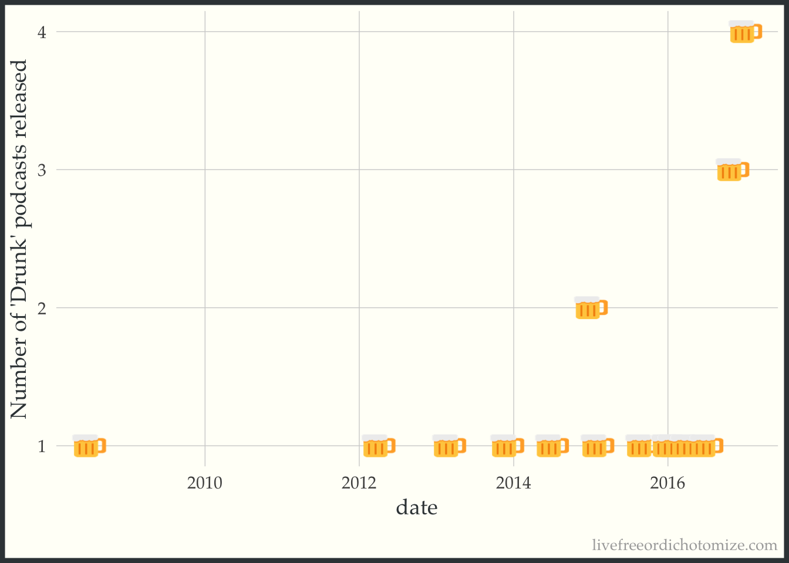

library('dplyr')
library('ggplot2')
req <- httr::GET(url = "https://itunes.apple.com/search",
query = list(
term = "drunk",
media = "podcast",
limit = 200
))
itunes <- jsonlite::fromJSON(httr::content(req))$resultsFor today‚Äôs rendition of I am curious about everything, in Hilary Parker & Roger Peng‚Äôs Not So Standard Deviations Episode 32, Roger suggested the prevalence of drunk podcasting has dramatically increased - so I thought I‚Äôd dig into it üößüë∑.
I pulled the iTunes API for the term drunk in podcasts & plotted the results over time. I also finally found an excuse to use emoGG.
This resulted in 170 podcasts, which I grouped by month/year released.
itunes %>%
mutate(date = as.Date(releaseDate),monyear = zoo::as.yearmon(date)) %>%
group_by(monyear) %>%
summarise(n = n()) %>%
mutate(date = zoo::as.Date(monyear)) %>%
ggplot(aes(x = date,y=n)) +
scale_x_date() +
emoGG::geom_emoji(emoji="1f37a") +
ylab("Number of 'Drunk' podcasts released") +
theme_minimal()
It looks like Roger may be onto something.
I tried to find the number of podcasts on iTunes by month over the past couple of years to adjust for this, but to no avail. If you have that data, please send it my way, so I can complete this very crucial analysis. In the meantime, I’ll pretend it doesn’t matter: While it is certainly true that the number of podcasts in general has absolutely increased over this time period, I would be surprised if the increase is as dramatic as the increase in the number of “drunk” podcasts.
Here is a little shout out to my favorite drunk podcast Drunk Monk, with the lovely Keiko Agena (Gilmore Girls’ Lane herself!).
Cheers! üçª
Update!
Ethan pointed out the curve was looking a little drunk…
@LucyStats @rdpeng @NSSDeviations Wait … that curve is starting to wrap around. Is it drunk? pic.twitter.com/YBAkAMLDM0
— Ethan Jewett (@esjewett) February 9, 2017
Indeed! We‚Äôve left in February‚Äôs data (despite the fact that February is not even half way over üôà).
itunes %>%
mutate(date = as.Date(releaseDate),monyear = zoo::as.yearmon(date)) %>%
filter(date < as.Date('2017-02-01')) %>% #add a filter!
group_by(monyear) %>%
summarise(n = n()) %>%
mutate(date = zoo::as.Date(monyear)) %>%
ggplot(aes(x = date,y=n)) +
scale_x_date() +
emoGG::geom_emoji(emoji="1f37a") +
ylab("Number of 'Drunk' podcasts released") +
theme_minimal()
If you are interested in other things NSSD has inspired me to do, check out this, or this.